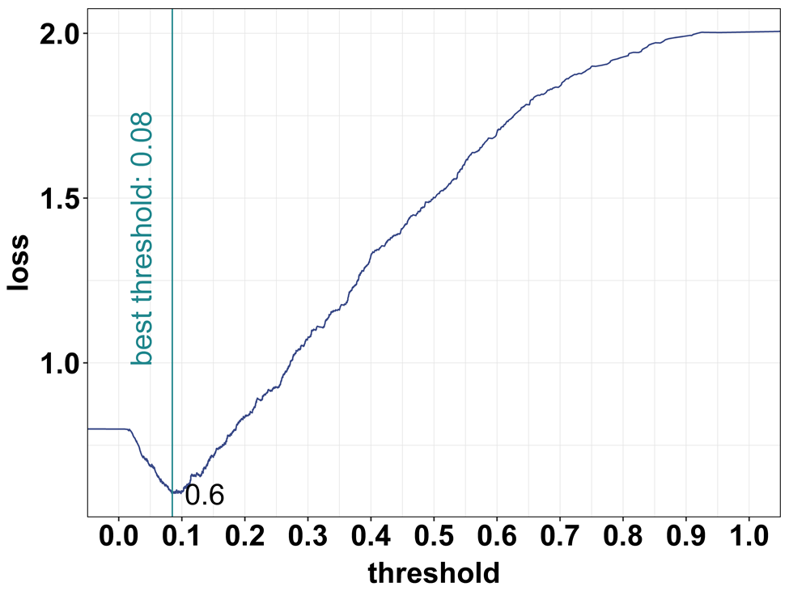

Probability and Classification
Am I a man, or am I a muppet?
Motivation
- Say you work for a consultancy agency helping a bank. You are asked to predict which firms will default on their loans.
- What would be better: a model that predicts probabilities or a model that classifies firms into default or not default?
- How do you use to decide which firms should get a loan.
- Companies need to assess the likelihood of their suppliers or clients staying in business, as it impacts their own operations.
- How to use historical data on company exits, along with key features, to predict the probability of a company’s exit.
Previously on DA
- In the previous weeks, we have covered the basics of prediction when the target is quantitative.
- Almost stright forward: predict the value of the target. Consider many specifications and pick the best one.
- We also cover the basic of probability modeling
- LPM, Logit and probit models: When your dependent variable is Binary.
- However, we have not fully cover how to use these models for prediction.
Prediction with qualitative target
- Consider cases where \(Y\) is qualitative
- Whether a debtor defaults (will default) on their loan
- Email is spam or not
- Game result is win / lose (no draw).
- For all this cases, the target (dep variable) is binary.
- The question is: Given this, What is the best way to predict the target?
- Predict the probability of “success” (default, spam, win)
- or make a classification (default, spam, win) based on a probability.
Classification: The extra step
The process
- Predict probability: We have done this.
- Predicted probability between 0 and 1 (logit, probit or LPM in extreme cases)
- For each observation we predicted a probability. Often that is it.
if logit: \[\Pr[y_i = 1|x_i] = \Lambda \times (\beta_0 + \beta_1x_i) = \frac{\exp (\beta_0 + \beta_1x_i)}{1 + \exp (\beta_0 + \beta_1x_i)}\]
Thats it! You can probably go couple of steps further and use various specifications, as well as LASSO (for logit) to pick the best model.
Best model can still be picked based on RMSE, brier score or Calibration.
Refresher: Probability Models
LPM - not this time: Predicted value MUST be between 0 and 1
Logit or probit (or other non-linear probability models)
Nonlinear probability models \[\Pr[y_i = 1|x_i] = \Lambda(\beta_0 + \beta_1x_i) = \frac{\exp (\beta_0 + \beta_1x_i)}{1 + \exp (\beta_0 + \beta_1x_i)}\]
- Predicted probability between 0 and 1
- Starts with a linear combination of the explanatory variables
- Multiplies them with coefficients, just like linear regression
- And then transforms that into something that is always between 0 and 1, the predicted probability.
What’s New with Binary target?
- The predicted Probability is not a value.
- Desire to classify
- assign 0 or 1
- based on a probability that comes from a model
- But how?
- We also need new measures of fit
- Some based on probabilities
- Others based on classification
What’s NOT new with Binary target?
- Need best fit
- With highest external validity
- Usual worries: overfit
- Cross-validation helps avoid worst overfit
- Models similar to those used earlier
- Regression-like models (probability models)
- Tree-based models (CART, Random Forest) <- We will not cover this
Probability prediction and process
- We build models to predict probability when:
- aim is to predict probabilities – (Duh!)
- aim is to classify (predict 0 or 1) – (we need probabilities first)
- Build models
- several Logit models by domain knowledge
- LASSO - Logit LASSO
- Pick the best model via cross-validation using RMSE / Brier score
- Or other LOSS function, if you have one
Classification process
- After you predict your conditional probability, you can make classifications based on some threshold or Rule.
- For example if \(\Pr[y = 1] > 0.5\) then predict 1, otherwise predict 0
- But we can choose any threshold. but how? (say top 10%?)
- We need to consider that we can make errors
- False negative
- False positive
- Thus we need to consider a threshold that minimizes the expected errors
Classification Table: Confusion Matrix
| \(y_j = 0\) | \(y_j = 1\) | Total | |
|---|---|---|---|
| \(\hat{y}_j = 0\) | TN | FN | TN + FN |
| Predicted negative | (true negative) | (false negative) | (all classified negative) |
| \(\hat{y}_j = 1\) | FP | TP | FP + TP |
| Predicted positive | (false positive) | (true positive) | (all classified positive) |
| Total | TN + FP | FN + TP | TN + FN + FP + TP |
| (all actual negative) | (all actual positive) | (N, all observations) |
Classification Table: making errors
| \(y_j = 0\) | \(y_j = 1\) | Total | |
|---|---|---|---|
| \(\hat{y}_j = 0\) | Predict firm stay | Predict firm stay | TN + FN |
| Predicted negative | (Firm did stay ) | (Firm exited ) | (all classified stay ) |
| \(\hat{y}_j = 1\) | Predict firm exit | Predict firm exit | FP + TP |
| Predicted positive | (Firm stayed ) | (Firm did exit) | (all classified exit) |
| Total | TN + FP | FN + TP | TN + FN + FP + TP |
| (all actual stay ) | (all actual exit) | (N, all observations) |
Measures of classification
There are several measures of classification, each with a different focus.
- Accuracy \(=(TP+TN)/N\)
- The proportion of rightly guessed observations
- Hit rate
- Sensitivity \(=TP / (TP+FN)\)
- The proportion of true positives among all actual positives
- Probability of predicted \(y\) is 1 conditional on \(y = 1\)
- Specificity \(= TN/(TN+FP)\)
- The proportion of true negatives among all actual negatives
- Probability predicted \(y\) is 0 conditional on \(y = 0\)
Theory: The ROC
Sensitivity vs Specificity
Measures of classification
- The key point is that there is a trade-off between making false positive and false negative errors.
- This is the essential insight in classification
- This can be expressed with specificity and sensitivity.
- if your Threshold is low, You can detect all the positives, but you will also detect many false positives. Sensitivity is high.
- if your Threshold is high, You can detect all the negatives, but you will also detect many false negatives. Specificity is high.
ROC Curve
- The ROC curve is a popular graphic for simultaneously displaying specificity and sensitivity for all possible thresholds.
- ROC: Receiver operating characteristic curve
- Name from engineering
- For each threshold, we can compute confusion table \(\rightarrow\) calculate sensitivity and specificity
- Then, we can plot sensitivity vs 1-specificity for all thresholds
- Horizontal axis: False positive rate (one minus specificity) = the proportion of FP among actual negatives
- Vertical axis: is true positive rate (sensitivity) = proportion of TP among actual positives
ROC Curve Intuition
- Consider this:
- If the threshold is 0, we predict all observations as 1. The sensitivity is 1, but the specificity is 0.
- If the threshold is 1, we predict all observations as 0. The sensitivity is 0, but the specificity is 1.
- The “ideal” threshold is somewhere in between.
- ROC curve shows how true positives and false positives increases relative to each other.
ROC Curve Intuition

Area Under ROC Curve
- ROC curve: the closer it is to the top left column, the better the (insample) prediction.
- Area under ROC (AUC) curve summarizes quality of probabilistic prediction
- For all possible threshold choices
- Area \(=\) 0.5 if random classification
- Area \(>\) 0.5 if curve mostly over 45 degree line
- AUC is a good statistic to compare models
- Defined from a non-threshold dependent model (ROC)
- The larger the better
- Ranges between 0 and 1.
Stata Corner
- Logit estimation:
logit y x1 x2 x3 - Predict probabilities:
predict yhat, pr - Classification:
gen yhat_class = (yhat > 0.5)estat classification
- ROC curve:
lroc
Model selection Nr.1: Probability models
- Model selection when we have no loss function, based on probability models only
- Predict probabilities (No actual classification)
- Use predicted probability to calculate RMSE
- Pick by smallest RMSE
- Or
- Draw up ROC curve and get AUC, Pick the model with the largest AUC
- More frequently used in practice
- Less sensitive to class imbalance
- In practice, AUC is more frequently used
Theory: Classification and loss function
How we make classification from predicted probability?
- We set a threshold!
- The process of classification
- If probability of event is higher than this threshold\(\rightarrow\) assign (predict) class 1; and 0 otherwise.
- Who sets the threshold?
- Usually approximated by 0.5
- or by the frequency of the event in the data
Classification: select the threshold with loss function
- Find optimal threshold with loss function.
- A loss function is a dollar value assigned to false positive and false negative.
- Most often the costs of FP and FN are very different.
Consider loss function
\[E[loss] = \Pr[FN] \times loss(FN) + \Pr[FP] \times loss(FP)\]
- In ideal case, the minimization of this suggests that optimal threshold is:
\[\text{Threshold} = \frac{loss(FP)}{loss(FN) + loss(FP)}\]
- Or we can try finding the threshold that minimizes the expected loss using Cross-validation. (Software issue)
When to use Formula
- Formula
- When dataset is “large”
- When our model has a “good” fit \(\text{Threshold}_{\min E (loss)} = \frac{loss(FP)}{loss(FN) + loss(FP)}\)
- In practice
- Pro: easy to use, often close enough
- Con: not the best cutoff, especially for smaller data, and poorer model
Class imbalance
- A potential issue for some dataset - relative frequency of the classes.
- Class imbalance = the event we care about is very rare or very frequent (\(\Pr(y = 1)\) or \(\Pr(y = 0)\) is very small)
- Fraud, Sport injury
- What is rare?
- Something like 1%, 0.1%. (10% should be okay.)
- Depends on size: in larger dataset we can identify rare patterns better.
- Consequence: Hard to find those rare events.
- You may be able to identify some patterns by chance.
Class imbalance: the consequences
- Methods we use are not good at handling it.
- Both for the models to predict probabilities, and for the measures of fit used for model selection.
- The functional form assumptions behind the logit model tend to matter more, the closer the probabilities are to zero or one.
- Cross-validation can be less effective at avoiding overfitting with very rare or very frequent events if the dataset is not very big. (Many samples will not even have the event.)
- Usual measures of fit can be less good at differentiating models.
- Consequence: Model fitting and selection setup not ideal
Class imbalance: what to do
- What to do? Two key insights.
- Know when it’s happening, and be ready for poor performance.
- May need an action: rebalance sample to help build better models
- Downsampling – randomly drop observations from frequent class to balance out more
- Before: 100,000 observations 1% event rate (99,000 \(y = 1\), 1,000 \(y = 0\))
- After 10,000 observations 10% event rate (9,000 \(y = 1\), 1,000 \(y = 0\))
- Over-sampling of rare events
- try Smart algorithms: Synthetic Minority Over-Sampling Technique (SMOTE)
- Create synthetic observations that are similar to the rare events
- synthetic rare = Combination of rare and infrequent events
Case study
Firm exit case study: Case study: background
- Banks and business partners are often interested in the stability of their customers.
- Predicting which firms will be around to do business with is an important part of many prediction projects.
- Working with financial and non-financial information, your task may be to predict which firms are more likely to default than others.
- Goal: Predict corporate default - exit from the market.
- We have to figure out and decide on target, features, etc.
Firm exit case study: bisnode-firms dataset
- Firm data
- Many different type of variables
- Financial, Management, Ownership, Status (HQ)
- Dataset is a panel data
- Rows are identified by company id (comp-id) and year.
- We’ll focus on a cross-section of 2012.
Firm exit case study: Label (target) engineering
- Defining our target. There is no “exit” - we have to define it!
- Option: If a firm is operational in year \(t\), but is not in business in \(t + 2\) -> Exit.
- This definition is broad
- Defaults / forced exit
- Orderly closure
- Acquisitions
Firm exit case study: Sample design
- Look at a cross section in 2012
- If alive in Year=2014, status_alive=1
- Keep if established in 2012
- We do not care about all firms. Not very small and very large
- Below 10 million euros
- Above 1000 euros
- Hardest call: keep when important variables are not missing
- Balance sheet like liquid assets
- Ownership like foreign
- Industry classification
- End with 19K observation, 20% default rate
Firm exit case study: Features - overview
- Key predictors
- size: sales, sales growth
- management: foreign, female, young, number of managers
- region, industry, firm age
- other financial variables from the balance sheet and P&L.
- For financial variables, we use ratios (to sales or size of balance sheet).
- Here it will turn out be important to look at functional form carefully, especially regarding financial variables.
- Mix domain knowledge and statistics.
- Plenty of analyst calls.
Firm exit case study: Feature engineering
- Growth rates
- 1 year growth rate of sales. Log difference.
- Could use longer time period, but Lose observations
- Ownership, management info
- Keep if well covered, impute some, but drop if key vars missing
- Sometimes simplify (unless big data):
ceo_young = ceo_age_mod <40 & ceo_age_mod >15
- Industry categories - need simplify
- Foreign ownership - above a threshold
- Numerical variables from balance sheet: Check functional form - logs, polynomials
Firm exit case study: Feature engineering tools
- Check coverage (missing values)
- Decide on imputation vs drop
- Categorical (factor) variables
- Numerical variables
- Check functional form - logs, polynomials
- Look at relationships in scatterplot, loess and decide
Firm exit case study: Feature engineering
- May need to make cleaning steps.
- Create binary variables (flags) when implementing changes to values.
- When financial values are negative: replace with zero and add a flag to capture imputation.
- Zeros will not work with logs.
- Annual growth in sales (difference in log sales) vs default
- Try editing variables by Winsorizing and adding flags for extreme values.
- Some ODD shapes due to extreme values.
The Weird Shape
Winzordize
Firm exit case study: Winsorizing
- When edge of a distribution is weird…
- Winsorizing is a process to keep observations with extreme values in sample
- for each variable, we
- identify a threshold value, and replace values outside that threshold with the threshold value itself
- and add a flag variable.
- for each variable, we
- Two ways to do it:
- an automatic approach, where the lowest and highest 1 percent or 5 percent is replaced and flagged.
- Pick thresholds by domain knowledge as well as by looking at lowess. Preferred.
Firm exit case study: Firm sales growth
- The winsorized value simply equals original value in a range and flat below/after.
Firm exit case study: Model features 1
- Firm: Age of firm, squared age, a dummy if newly established, industry categories, location regions for its headquarters, and dummy if located in a big city.
- Financial 1: Winsorized financial variables: fixed, liquid (incl current), intangible assets, current liabilities, inventories, equity shares, subscribed capital, sales revenues, income before tax, extra income, material, personal and extra expenditure.
- Financial 2: Flags (extreme, low, high, zero - when applicable) and polynomials: Quadratic terms are created for profit and loss, extra profit and loss, income before tax, and share equity.
- Growth: Sales growth is captured by a winsorized growth variable, its quadratic term and flags for extreme low and high values.
Firm exit case study: Model features 2
- HR: For the CEO: female dummy, winsorized age and flags, flag for missing information, foreign management dummy; and labor cost, and flag for missing labor cost information.
- Data Quality: Variables related to the data quality of the financial information flag for a problem, and the length of the year that the balance sheet covers.
- Interactions: Interactions with sales growth, firm size, and industry.
Firm exit case study: Models
Models (number of predictors)
- Logit M1: handpicked few variables (\(p = 11\))
- Logit M2: handpicked few variables + Firm (\(p = 18\))
- Logit M3: Firm, Financial 1, Growth (\(p = 35\))
- Logit M4: M3 + Financial 2 + HR + Data Quality (\(p = 79\))
- Logit M5: M4 + interactions (\(p = 153\))
- Logit LASSO: M5 + LASSO (\(p = 142\))
- Number of coefficients = N of predictors +1 (constant)
Firm exit case study: Data
- \(N = 19,036\)
- \(N = 15,229\) in work set (80%)
- Cross validation 5x training + test sets
- Used for cross-validation
- \(N = 3,807\) in holdout set (20%)
- Used only for diagnostics of selected model.
Firm exit case study: Comparing model fit
| Variables | Coefficients | CV RMSE | |
|---|---|---|---|
| Logit M1 | 4 | 12 | 0.374 |
| Logit M2 | 9 | 19 | 0.366 |
| Logit M3 | 22 | 36 | 0.364 |
| Logit M4 | 30 | 80 | 0.362 |
| Logit M5 | 30 | 154 | 0.363 |
| Logit LASSO | 30 | 143 | 0.362 |
- 5-fold cross-validated on work set, average RMSE
- Will use Logit M4 model as benchmark
Classification
- Picked a model on RMSE/Brier score
- For classification, we will need a threshold
Firm exit case study: ROC curve
- ROC curve shows trade-off for various values of the threshold
- Go through values of the ROC curve for selected threshold values, between 0.05 and 0.75, by steps of 0.05
Firm exit case study: AUC
| Model | RMSE | AUC |
|---|---|---|
| Logit M1 | 0.374 | 0.738 |
| Logit M2 | 0.366 | 0.771 |
| Logit M3 | 0.364 | 0.777 |
| Logit M4 | 0.362 | 0.782 |
| Logit M5 | 0.363 | 0.777 |
| Logit LASSO | 0.362 | 0.768 |
- Can calculate the AUC for all our models
- Model selection by RMSE or AUC
- Here: same (could be different if close)
Firm exit case study: Comparing two thresholds
- Take the Logit M4 model, predict probabilities and use that to classify on the holdout set
- Two thresholds: 50% and 20%
- Predict exit if probability > threshold
Firm exit case study: Comparing two thresholds
| Threshold: 0.5 | Threshold: 0.2 | |||||
|---|---|---|---|---|---|---|
| Actual stay | Actual exit | Total | Actual stay | Actual exit | Total | |
| Predicted stay | 75% | 15% | 90% | 57% | 7% | 64% |
| Predicted exit | 4% | 6% | 10% | 22% | 14% | 36% |
| Total | 79% | 21% | 100% | 79% | 21% | 100% |
Firm exit case study: Threshold choice consequences
- Having a higher threshold leads to
- fewer predicted exits:
- 10% when the threshold is 50% (36% for threshold 20%).
- fewer false positives (4% versus 22%)
- more false negatives (15% versus 7%).
- fewer predicted exits:
- The 50% threshold leads to a higher accuracy rate than the 20% threshold
- 50% threshold: 75% + 6% = 81%
- 20% threshold: 57% + 14% = 71%
- even though the 20% threshold is very close to the actual proportion of exiting firms.
Summary
First option: no loss fn
- On the work set, do 5 fold CV and loop over models
- Do Probability predictions
- Calculate average RMSE on test for each fold
- Draw ROC Curve and calculate AUC for each fold
- Pick best model based on avg RMSE
- Take best model and estimate RMSE on holdout\(\rightarrow\)best guess for live data performance
- Output: probability ranking - most likely to least likely.
- Show ROC curve and confusion table with logit on holdout 4 at \(t = 0.5\) and \(t = 0.2\) - to illustrate trade-off.
Firm exit case study: The loss function
- Loss function = FN, FP
- What matters is FN/FP
- FN=10
- If the model predicts staying in business and the firm exits the market (a false negative), the bank loses all 10 thousand euros.
- FP=1
- If predict exit and the bank denies the loan but the firm stays in business in fact (a false positive), the bank loses the profit opportunity of 1 thousand euros.
- With correct decisions, there is no loss.
Firm exit case study: Finding the threshold
- Find threshold by formula or algo
- Formula: the optimal classification threshold is \(1/11 = 0.091\)
- Algo: search thru possible cutoffs
Firm exit case study: Finding the threshold

- Consider all thresholds \(T = 0.01, 0.02—1\)
- Calculate the expected loss for all thresholds
- Pick when loss function has the minimum
- Done in CV, this is fold Nr.5.
Firm exit case study
- Model selection process
- Predict probabilities
- Use predicted probabilities and loss function to pick optimal threshold
- Use that threshold to calculate expected loss
- Pick model with smallest expected loss (in 5-fold CV)
- We run the threshold selection algorithm on the work set, with 5-fold cross-validation.
- Best is model Logit M4
- the optimal classification threshold by algo is 0.082. Close to formula (0.091)
- The average expected loss of 0.64.
Firm exit case study:Summary of process with loss function
- On the work set, do 5 fold CV and loop over models
- Do Probability predictions
- Calculate average RMSE on each test folds
- Draw ROC Curve and find optimal threshold with loss function (1,10)
- show: threshold search - loss plots and ROC curve for fold 5
- Summarize: for each model: average of optimal thresholds, threshold for fold 5, average expected loss, expected loss for fold Nr.5.
- Pick best model based on average expected loss
- Take best model, re-estimate it on work set + find optimal threshold and estimate expected loss on holdout set
Summary
- Decide whether the goal is predicting probabilities or classification.
- The outcome of prediction with a binary target variable is always the predicted probabilities as a function of predictors.
- When our goal is probability prediction, we should find the best model that predicts probabilities by cross-validation + RMSE/AUC.
- When our goal is classification, we should find the best model that has the smallest expected loss.
- With formula for threshold or search algorithm
- Finding the optimal classification threshold needs a loss function.
Summary
- Without a loss function, no classification.
- If you don’t have one, make it up.
- Don’t rely on default 0.5.